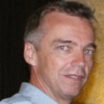

Research at ESLSCA
Research at ESLSCA
As one of the first French institutions to have established international programs, ESLSCA has always placed research at the heart of its program design and teaching approach. ESLSCA performs rooted research, close to decision-makers and to their concerns. As early as 1997, ESLSCA held a discussion with a group of young researchers who wished to develop research and teaching around a subject they were the pioneers of: Economic Intelligence.
The first international research comparing European, Japanese, American and Russian economic intelligence systems was published as part of works conducted within ESLSCA in 1993 (Rapport Martre). With the creation of the École de Guerre Économique – School of Economic Warfare in 1997, ESLSCA began to engage in diligent research policy on economic intelligence, strategic movements, information warfare; This research was celebrated in a summary book edited by Christian Harbulot in 2017.
ESLSCA also represents more than 40 years of research and innovation in the field of financial analysis, quantitative finance and trading. With its programs in Financial Markets, ESLSCA welcomed over 5 generations of young researchers in finance who can now be found in the largest private and investment banks.
Research at ESLSCA is governed by a Scientific Committee, which was renewed in 2017 following the acquisition of the School by Grupo Planeta. It is composed of internationally recognized management professors gathered in this scientific committee to guide the research and innovation of the school, and help make ESLSCA Paris an innovative school, committed to research training and focusing on performance. The members of the ESLSCA Scientific Committee are:
William H. Starbuck, a resident professor at the Lundquist College of Business at the University of Oregon. Previously, he held professorships in economics, sociology at Purdue University, Johns Hopkins University, Cornell University, the University of Wisconsin-Milwaukee and the University of New York and visiting professor in universities and business schools in England, France, New Zealand, Norway and Sweden. He was a visiting scholar at the International Management Institute in Berlin; Editor of Administrative Science Quarterly; he chaired the selection committee of senior Fulbright scholarships in business management; he led the Management doctoral program at the University of New York and he was the president of the Academy of Management. He was elected member of the American Psychological Association, the American Psychological Society, the British Academy of Management, and the Society of Industrial and Organizational Psychology. WH Starbuck has published more than 150 books and articles on accounting, negotiation, business strategy, computer programming, computer simulation, forecasting, decision making, human-computer interaction, learning, organizational design, growth of the organization, perception, scientific methods, social revolutions and the Society for Industrial and Organizational Psychology.
Jacques Rojot, Professor Emeritus at the University of Paris II, Associate of Management Sciences Faculties. Author of numerous books and articles in scientific journals, including Europe and the USA, he is an expert and consultant for international organizations and private companies. France correspondent of the National Academy of Arbitrators, he also held executive positions in several knowledgeable, international, French and North American companies. He is and was a visiting professor in several foreign Universities, in Asia, North America and Europe, is chief editor of the “Human Resource Management Review” and a member of the editorial boards of several foreign scientific journals.
Philippe Baumard, University Professor, faculty Associate at Conservatoire national des arts et métiers, Philippe Baumard is Dean of Research, Ecole de Guerre Economique - Mbafcs; Research Associate at the CRG of the Ecole Polytechnique, at the CRRM of the University of California, Berkeley, and was Visiting Professor of the universities of Stanford and NYU. His work involves learning, in adverse situations, the strategic models of resilience and innovation. Author of ninety scientific articles, of twelve books, he is also Chairman of the Scientific Committee of the Higher Council for Training and Strategic Research. He won the national innovation competition I-Lab 2013 and CMI 2014.
Michel Kalika is Associate Professor of Management at IAE Lyon School of Management, Magellan research center, University Jean Moulin, Lyon 3. He created the Business Science Institute, a nonprofit organization, creating an Executive Doctorate in Business Administration (DBA) for managers internationally. He is also the designer of the BSIS (Business School Impact Survey), ann impact assessment methodology of business schools, and co-director of the FNEGE and EFMD of the BSIS Label, and the President of the ICD Scientific Committee. Author and co-author of over 25 books (including the most reissued French strategy publication) and numerous articles and teaching cases, he also supported 56 doctoral theses. His most recent research focuses on the overlapping of communication media (the “millefeuille” theory), information overload and the impact of business schools.
Eric Abrahamson, Hughie E. Mills Professor of Business Management,
Bernstein Faculty Leader, Sanford C. Bernstein & Co. Center for Leadership and Ethics; Columbia University, New York, is studying the creation, spread, use and release of innovative techniques for the management of organizations and their employees. He is best known for his work on managerial modes and management techniques. He explored the topic of change management in Change Without Pain (Harvard Business School Press, 2005), which won Book of the Year in corporate strategy in the United States. More recently, Abrahamson studied the dynamics of moderately disordered systems - offices, organizations and even industrial districts. Eric Abrahamson co-wrote, together with David Freedman, a book that popularized ideas on the benefits of a moderately disordered system: A Perfect Mess: The Hidden Benefits of Disorder (Little, Brown and Company, 2007).
Jean Philippe Denis, Paris Sud University Professor, elected Member to the Board of the International Association of Strategic Management (AIMS), 2012-2015; Elected member of the Board of Directors of the French Society of Management, 2012-2015;
Member of Editorial Board of International Management. Reviewer for journals European Management Journal, California Management Review, Management International, Economies and Society (Series K), Financial Control Strategy; President of the University Paris Sud scientific management section. Director of the strategic management/Paris Saclay distinction (Paris Sud, ENS Cachan, HEC, Ecole Polytechnique).

Frédéric Le Roy is a University Professor at the University of Montpellier and affiliate professor at Montpellier Business School, Visiting Professor at the Haas School of Business, UC Berkeley. He is director of MRM Coopetition Lab, which reports to MRM (Montpellier Research Management). He also presides over the research program in “inter-organizational and Innovation Strategies” of the “entrenereneurship” LABEX. As Research Director of ISEM (Institute of Organizational Science and Management), he is responsible for the Master’s degree in “Management, Organization and Strategic Consulting”. For over 20 years, his research has focused on competitive, cooperative and coopetition strategies. His research interests include strategic and managerial innovations. He is the author of several books and numerous articles on these topics. You can find more details on these research fields in the sections Research and Publications.
Casilda Gell, Academic Director at OBS Business School, London School of Economics Fellow, Professor, PhD in International History from the London School of Economics. She completed residential research at the European University Institute (Florence) and performed her postdoctoral research at the Department of Political Science and Public Law of the Autonomous University of Barcelona. She has published several books, and performs consulting activities for several organizations such as the Consell Català del Moviment Europeu, FC Barcelona (Consultative Council), the Princess of Girona Foundation.
Oriole Amat, Professor of financial economics, Pompeu Fabra University, Board Member of the National Commission on Stock Exchange, Spain; Professor of Financial Economics and Accounting, Pompeu Fabra University; In addition, from 1979, he carrioued out professional works in the field of accounting and finance. He served as visiting Professor at several European, American and Asian universities. He took part in working groups that developed the General Accounting Plan (Spanish GAAP). He has published several books translated into many languages and many academic and professional journals in the field of accounting and financial analysis.
Maurizio Zollo, Professor and Dean of Bocconi University, Italy. Professor Zollo is the Director of the strategy and sustainable development program in the Department of Management and Technology of Bocconi University and a member of the board of the Research Center for innovation, organization and strategy (CRIOS). He is also a visiting professor at the MIT Sloan School of Management. Former President of the European Academy of Management (EURAM), he was also editor of European Management Review. Professor Zollo served for a decade on the Executive Committee of the Strategic Management Society, which he helped establish in 2003. In addition to his role as editor for the European Management Review, he was also associate editor or member of an editorial board of six other leading academic journals in strategic and organizational studies.
Our Dean for Research, Professor Philippe Baumard
Professor Philippe Baumard was appointed in October 2006 as Dean Advisor for Research at MBAFCS Business School Paris. Philippe Baumard is a University Professor, faculty Associate in Management Science at Conservatoire national des arts et métiers, researcher associate at the management research center of the Ecole Polytechnique, and Visiting Professor in many foreign universities, including Stanford University and UC Berkeley. He has taught in Australia (Sydney UTS), the USA, Japan and Sweden. He took part in the first open conference in China on economic intelligence in 1991 and the opening of professional associations on economic intelligence in Japan and Australia in 1992. He also contributed to the first publications on the war of information in 1994 (Infowar, Schwartau) and 1996 (Cyberwar AFCEA). A teacher and a researcher, Professor Baumard is also a practitioner, given he was the Director of Strategic Studies at France Telecom and Executive Advisor for Innovation at the Airbus Group. Philippe Baumard is the author of 11 books that contain over 90 international scientific publications. His research focuses on tacit knowledge, failure and ‘unlearning’ during organizational crises.
Some publications from our research professors ...
Baumard Ph., Cybersecurity in France, Springer, 2017.
Baumard, Ph., Le vide stratégique, Paris: CNRS Editions, 2012.
Baumard, Ph., “Les contextes cognitifs de la stratégie”, in: F. Tannery, A.C. Martinet, T. Hafsi et J.P. Denis (Eds.), Encyclopédie de la stratégie, Paris: Economica, 2014.
Baumard Ph, Kobeissi, Nadim, “L’algorithme et l’ordre public”, Arch. phil. droit, 58, 2015, pp. 269-288.
Baumard Ph. “Tearing Down the Façades of Radical Innovation”, Industrial Marketing Management, Vol. 43(4), 2014.
Harbulot Christian (2008) “Intelligence économique et problématique de puissance” in Regards croisés sur l’intelligence économique, co-construction d’une discipline, directed by Jean-Pierre Bernat, Editions Hermès Lavoisier, juin 2008.
Harbulot Christia, (2007); Les chemins de la puissance: déterminants, cultures et stratégies, Editions Tatamis, February 2007.
Stibe, A. & Larson, K. (2016). Persuasive Cities for Sustainable Wellbeing: Quantified Communities. In M. Younas et al. (eds.): Mobile Web and Intelligent Information Systems (MobiWIS 2016), LNCS 9847 (pp. 271–282).
Stibe, A., & Cugelman, B. (2016). Persuasive Backfiring: When Behavior Change Interventions Trigger Unintended Negative Outcomes. In Persuasive Technology (pp. 65–77). Springer International Publishing.
Stibe, A., and Oinas-Kukkonen, H. (2014)User Engagement in Feedback Sharing through Social Influence In Isaias, P., Kommers, P., and Issa, T. (Eds.) The Evolution of the Internet in the Business Sector: Web 1.0 to Web 3.0, IGI Global, Chapter 11 (pp. 234-257).